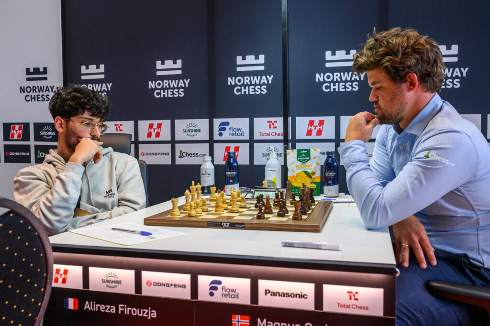
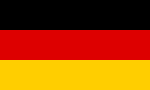

Norway Chess 2026

Partida entre Carlsen e Firouzja.
Após 13 anos fincando suas raízes em Stavanger, o Norway Chess 2026 promoveu uma mudança histórica de cenário ao transferir suas estruturas para a capital norueguesa, Oslo. A mudança de ares parece ter injetado uma energia ainda mais imprevisível no torneio, que manteve o seu formato mais famoso e implacável: o sistema de pontuação que pune a passividade.
Cada vitória na partida clássica rende impressionantes 3 pontos. Em caso de empate, os jogadores não vão para o hotel descansar; eles disputam imediatamente uma partida rápida no estilo Armageddon (onde as brancas têm mais tempo no relógio, mas a obrigação da vitória, enquanto as pretas jogam pelo empate). O vencedor do Armageddon leva 1,5 ponto e o perdedor fica com 1 ponto. Esse regulamento força os enxadristas a buscarem linhas agudas e o jogo sem falhas desde os primeiros lances.
Classificação da edição atual:
| Posição | Jogador | Elo | Partidas | Pontos | |||||
|---|---|---|---|---|---|---|---|---|---|
| 1º | R Praggnanandhaa | 2733 | 3 1½ | 3 0 | 3 3 | 3 1½ | 0 3 | 18 | |
| 2º | Wesley So  |
2754 | 3 1 | 1½ 1½ | 1½ 3 | 1½ 1½ | 1½ 1 | 17 | |
| 3º | Alireza Firouzja | 2759 | 3 0 | 1 1 | 3 0 | 1½ 1½ | 3 1½ | 15½ | |
| 4º | Magnus Carlsen  |
2840 | 0 0 | 0 1 | 3 0 | 1½ 1½ | 3 3 | 13 | |
| 5º | Vincent Keymer  |
2759 | 1 0 | 1 1 | 1 1 | 1 1 | 3 1 | 11 | |
| 6º | Gukesh Dommaraju | 2732 | 0 3 | 1½ 1 | 1 0 | 0 0 | 1½ 0 | 8 | |
O jovem grande mestre indiano Rameshbabu Praggnanandhaa, de apenas 18 anos, consagrou-se o grande campeão do Norway Chess 2026. A definição veio de forma dramática na 10ª e última rodada. Praggnanandhaa entrou no dia decisivo meio ponto atrás do norte-americano Wesley So, que liderava a tabela. Jogando de brancas, o indiano derrotou o alemão Vincent Keymer em uma partida clássica soberba, somando 3 pontos cruciais. Como Wesley So apenas empatou seu jogo clássico contra Alireza Firouzja (vencendo depois no Armageddon), Praggnanandhaa ultrapassou o rival e garantiu o título isolado com 18 pontos. Outro destaque do torneio foi a vitória de "Pragg" sobre o número 1 do mundo, Magnus Carlsen, ainda na terceira rodada, mostrando que o jovem está pronto para o topo do xadrez mundial.